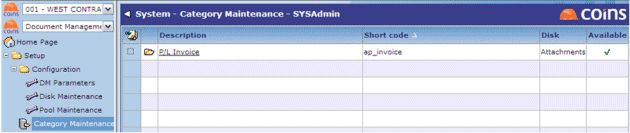

Categories
Categories are the different types of documents you can upload. If you are attaching documents to records, the category corresponds to a database table. The category also specifies which disk directory the uploaded documents will be physically stored in.
Each category must have one or more Keywords associated with it.
To set up categories:
- Go to Category Maintenance.

- Set up categories for each type of document you will upload.
- If the category is associated with a record, the Short code must be the same as the table name.
- The Disk is the location where stores the documents when they have been uploaded.
- When you save the category record, click the link in the Document column to specify the keywords that are associated with the document category. Keywords allow you to search for the document later, and if the category is associated with a record, the keywords must include those mandatory keywords that correspond to the table's unique primary key.
- Click the Unattached Keywords tab.
-
the keyword or keywords you want to associate with the document category.
- Choose Attach keyword to category from the action list.
- To make a keyword mandatory, click the Keywords tab, open the keyword record, the Mandatory box, and then save the record.
- You can also specify which document group or groups the document category belongs to. See Document Security.
Categories - configuration
Use Disk Maintenance to set up the disk directories.
Use Keywords Maintenance to set up the keywords.